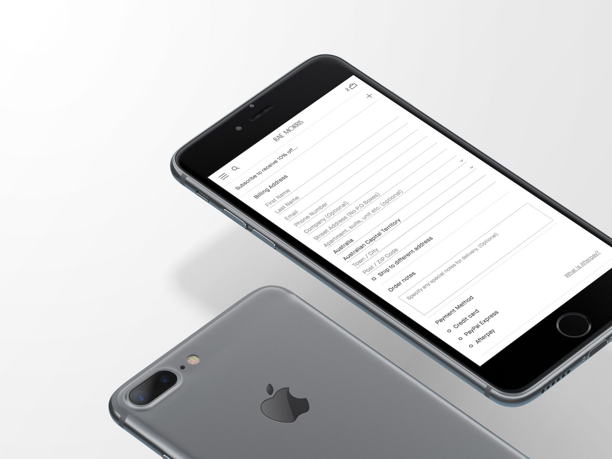
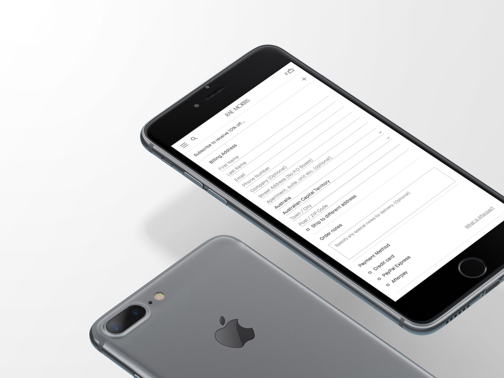
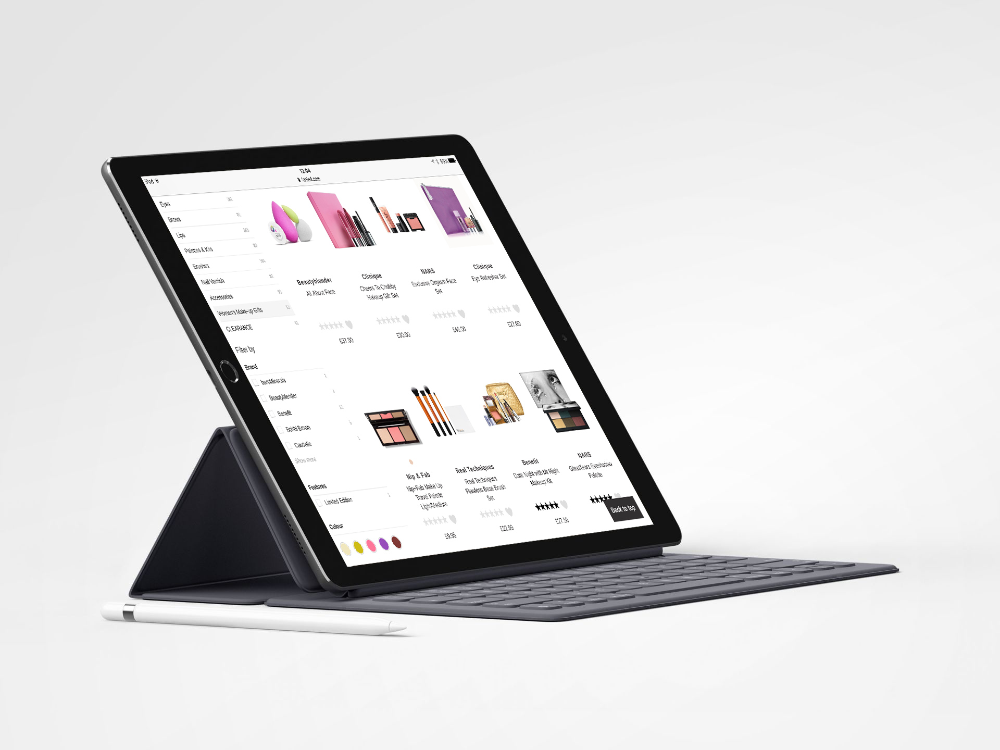
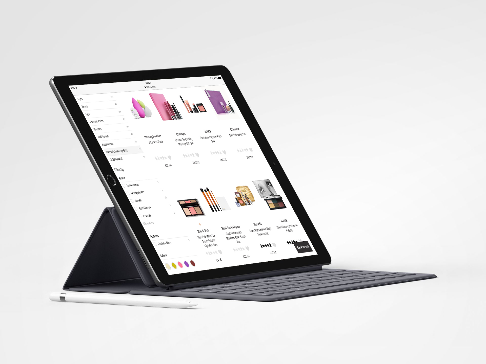

 

My story
We launched Fabled.com, in partnership with Marie Claire, in the summer of 2016. Fabled was the result of the work started in 2012 when we initiated the General Merchandise department to offer top products lines not appropriate for a supermarket.
Differently from Fetch and Sizzle, with Fabled, we worked under the exciting collaboration of Marie Claire's stakeholders. Their high understanding of the beauty business and its customers, helped us to define a robust brand and an appropriate online user experience.
My responsibilities in Fabled were very hands-on. The most significant challenge was, for most of the journey, being a very small team facing several and diverse discipline groups. As with every challenging ride, there were ups and downs. Defining a UX vision and practice, understanding the beauty market and its users through research, acknowledging business objectives from both Ocado and Marie Claire, listening to the data analyst team's outcomes, supporting and meeting the merchandise and marketing teams' high expectations, were some of the requirements to fulfil my role successfully.
In all honesty, we didn't innovate the beauty experience, not yet at least. We intentionally worked on maturing our mobile-first and responsive e-commerce platform so to enable us to challenge the market with a new proposition.
We lived with our assumptions; we learned how our users interacted with our product by ongoing quantitative analysis and data mining, and we listened to our customers' feedback as well as staying focused on business goals.
In one sentence, we didn't follow the"UX from the book" way.
Our strategy was to validate our assumptions with real customers through Continuous Delivery. We launched changes of all types—including new features, configuration changes, bug fixes and experiments—into the hands of users safely and quickly in a sustainable way. By doing so, we were able to deliver a higher quality product faster into the market while keeping costs low and making teams content.
Between 2015 and 2016, I designed a product and built a UX team efficient and experienced enough for me to intake a new Ocado challenge, the Ocado Smart Platform.